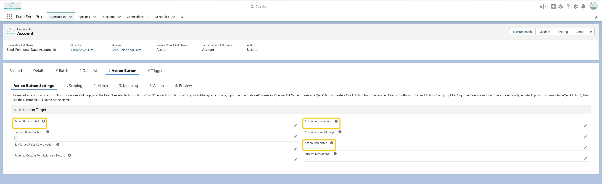

<article>
  <p>
    In the <strong>"Action on Target"</strong> section of the Executable, you
    can customize the action's appearance by setting the following fields:
  </p>
  <ul>
    <li>
      <strong>Action Button Label</strong> – Defines the text shown on the
      button
    </li>
    <li>
      <strong>Action Button Variant</strong> – Sets the button style (e.g.,
      brand, neutral, destructive)
    </li>
    <li>
      <strong>Action Icon Name</strong> – Specifies the Salesforce Lightning
      icon to display on the button
    </li>
  </ul>
  <p>
    These settings control how the action button appears in the Data List UI.
  </p>
</article>


 